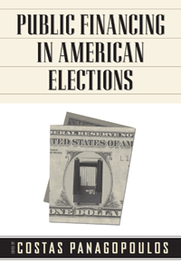

<body bgcolor="#FFFFFF" text="#000000" link="#0000FF" vlink="#CC0000" alink="#CC0000"><center><hr width="350" size="1" align="center" noshade>The first book-length treatment of the public financing of elections in the United States<hr width="350" size="1" align="center" noshade><p><a href="https://cdcshoppingcart.uchicago.edu/Cart/ChicagoBook.aspx?ISBN=9781439906927&&PRESS=temple" target="_top">Buy this book!</a> | <a href="https://cdcshoppingcart.uchicago.edu/Cart/Cart.aspx?PRESS=temple" target="_top">View Cart</a> | <a href="https://cdcshoppingcart.uchicago.edu/Cart/Cart.aspx?PRESS=temple" target="_top">Check Out</a></p><p></p></center><!--none//--><h1>Public Financing in American Elections</h1>
<h3>edited by Costas Panagopoulos</h3>
<P>cloth 1-4399-0692-0 $90.50, Jun 11, <FONT COLOR=#990033>Available</FONT>
<br>paper 1-4399-0693-9 $34.95, Jun 11, <FONT COLOR=#990033>Available</FONT>
<br>Electronic Book 1-4399-0694-7 $34.95 <FONT COLOR=#990033>Available</FONT>
<BR> 268 pp
6 x 9
59&nbsp;tables
</P><BLOCKQUOTE><I>"Costas Panagopoulos has brought together an impressive team of scholars to produce an accessible and informative book that carefully and clearly explains the issues and controversies surrounding public financing in American elections. The collection of work in this volume makes a serious scholarly contribution to the academic literature, with chapters that are on the �cutting edge,� reflecting the latest and most interesting new research in the field. </I>Public Financing in American Elections<I> belongs on the bookshelf of every scholar and student who cares about and studies campaign finance reform."</I><BR>&#151 <B>Peter L. Francia</B>, Associate Professor in the Department of Political Science, East Carolina University</I></BLOCKQUOTE>
<p>Reformers argue that public financing of campaigns will help rescue American democracy from the corruptive influence of money in elections. <em>Public Financing in American Elections</em> evaluates this claim in an effort to remove the guesswork from the discussion about public finance.</p>
<p>Featuring some of the most senior scholars in political science and electoral studies, this book provides an up-to-date treatment of research and thinking about public campaign finance reforms. Exploring proposals at the local, state, and federal levels, the contributors provide a comprehensive overview of public financing initiatives in the United States and an examination of their impact. Also included are focused analyses of various existing public programs.</p>
<BR>&nbsp;<h2>Excerpt</h2><P>Excerpt available at <a href="http://www.temple.edu/tempress">www.temple.edu/tempress</a></p>
<BR>&nbsp;<h2>Reviews</h2>
<p><I>�This collection makes a valuable contribution to the debate over public financing of elections in the United States. It covers changes in the presidential public financing system but also reviews state and municipal public financing systems along with the prospects for public funding of congressional campaigns and public opinion on the topic. Few books investigate this range of public financing systems and their effects on politics.�</I><br>&#151<b>John Green</b>, Distinguished Professor of Political Science and Director of the Ray C. Bliss Institute of Applied Politics at the University of Akron
<p><i>"The articles valuably describe the range of, and considerable variation among, the programs currently in existence. Remarkably, few of the programs have ever before been evaluated for efficacy....[A] valuable snapshot of this obscure policy area. Summing Up: Recommended." </i> <br>&#151<b><i>Choice</i></b>
<BR>&nbsp;<h2>Contents</h2><P>
<p>Preface<br>
Introduction &bull; Costas Panagopoulos</p>
<p><b>Part I: The Lay of the Land: Public Financing in the American States</b>
<br>1. Back to the Future? The Quest for Public Financing of Congressional Campaigns &bull; R. Sam Garrett
<br>2. Small Donors, Large Donors, and the Internet: Rethinking Public Financing for Presidential Elections after Obama &bull; Michael Malbin
<br>3. Public Financing in the States and Municipalities &bull; Robert M. Stern
<br>4. Public Attitudes toward Publicly Financed Elections, 1972�2008 &bull; Stephen R. Weissman and Ruth A. Hassan (with assistance from Jack Santucci)</p>
<p><b>Part II: The Consequences of Public Financing</b>
<br>5. Campaign Finance Reform Reconsidered: New York City�s Public Finance Program at Twenty &bull; Jeffrey Kraus
<br>6. Leveling the Playing Field: Publicly Financed Campaigns and Electoral Competitio &bull; Costas Panagopoulos
<br>7. Public Financing and Candidate Participation in Gubernatorial Elections &bull; Conor Dowling
<br>8. Public Money, Candidate Time, and Electoral Outcomes in State Legislative Elections &bull; Michael G. Miller
<br>9. Does Public Financing of State Election Campaigns Increase Voter Turnout? &bull; Jeffrey Milyo, David M. Primo, and Matthew L. Jacobsmeier
<br>10. Public Financing, Attitudes toward Government and Politics, and Efficacy&bull; Michael G. Miller and Costas Panagopoulos</p>
<p>Conclusion: The Future of Public Financing in American Elections &bull; Costas Panagopoulos
<br>Contributors
<br>Index</p>
</P><BR>&nbsp;<H2>About the Author(s)</H2>
<P><strong>Costas Panagopoulos</strong> is Assistant Professor of Political Science and is Director of the Center for Electoral Politics and Democracy at Fordham University.</P>
<BR><H2>Subject Categories</H2>
<p><A HREF="/tempress/political.html" TARGET="_top">Political Science and Public Policy</a>
<BR><A HREF="/tempress/sociology.html" TARGET="_top">Sociology</a>
<BR><A HREF="/tempress/mass_media.html" TARGET="_top">Mass Media and Communications</a>
</p>
<p align="center"><a href="https://cdcshoppingcart.uchicago.edu/Cart/ChicagoBook.aspx?ISBN=9781439906927&&PRESS=temple" target="_top">Buy this book!</a> | <a href="https://cdcshoppingcart.uchicago.edu/Cart/Cart.aspx?PRESS=temple" target="_top">View Cart</a> | <a href="https://cdcshoppingcart.uchicago.edu/Cart/Cart.aspx?PRESS=temple" target="_top">Check Out</a></p><p><font face="Arial" size="1"><a href="copyright.html" onMouseOver="window.status='Web Copyright Policy';return true;" onMouseOut="window.status=''" title="Web Copyright Policy">&copy;</a> 2015 <a href="http://www.temple.edu" target="new" onMouseOver="window.status='Link to Temple University home page';return true;" onMouseOut="window.status=''" title="Link to Temple University home page">Temple University</a>. All Rights Reserved. http://www.temple.edu/tempress/titles/2156_reg.html</font></p>